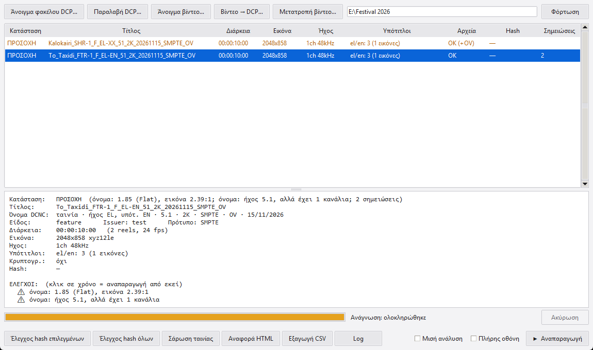
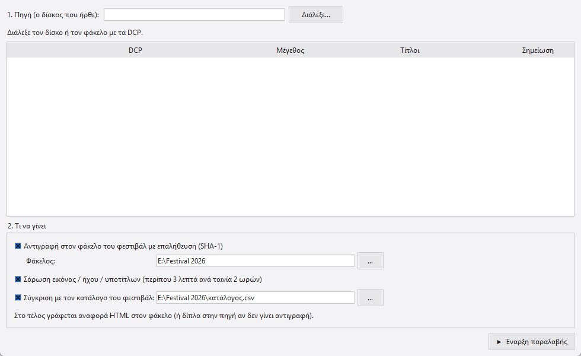
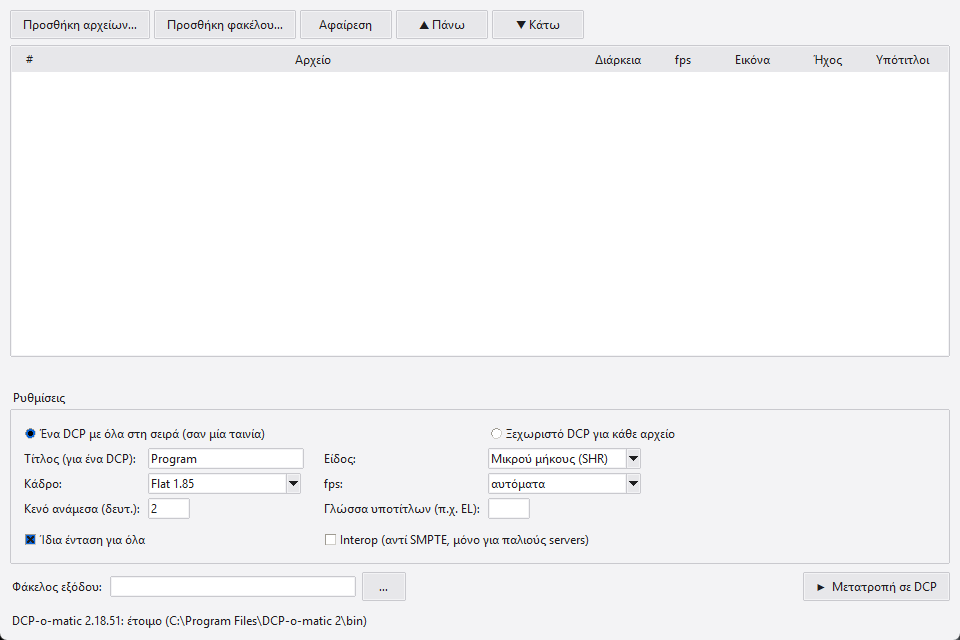
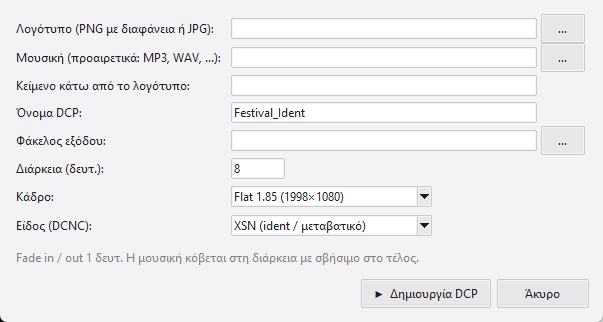
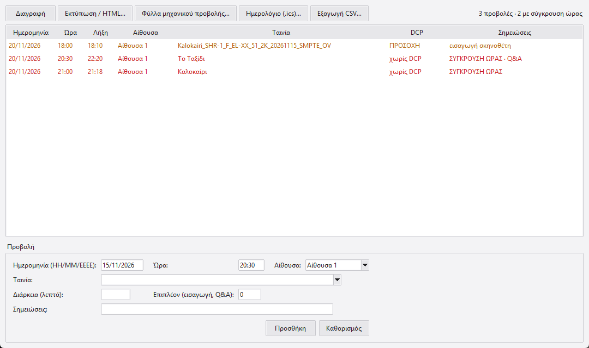
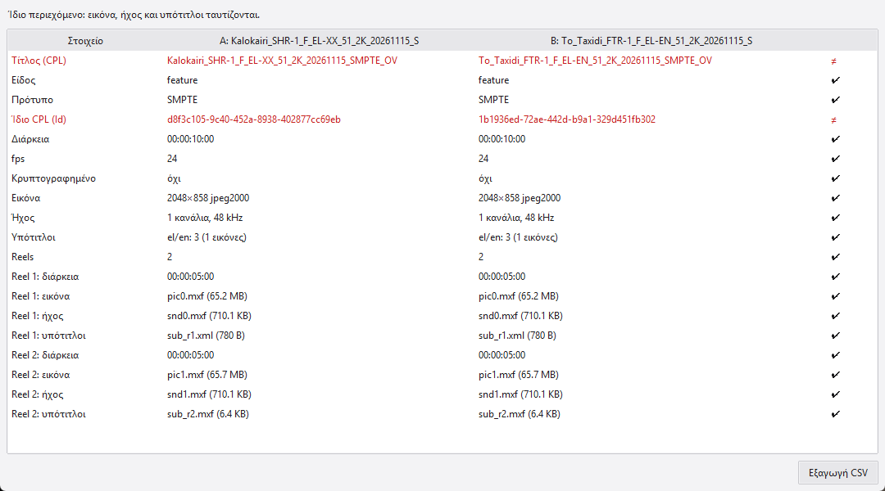
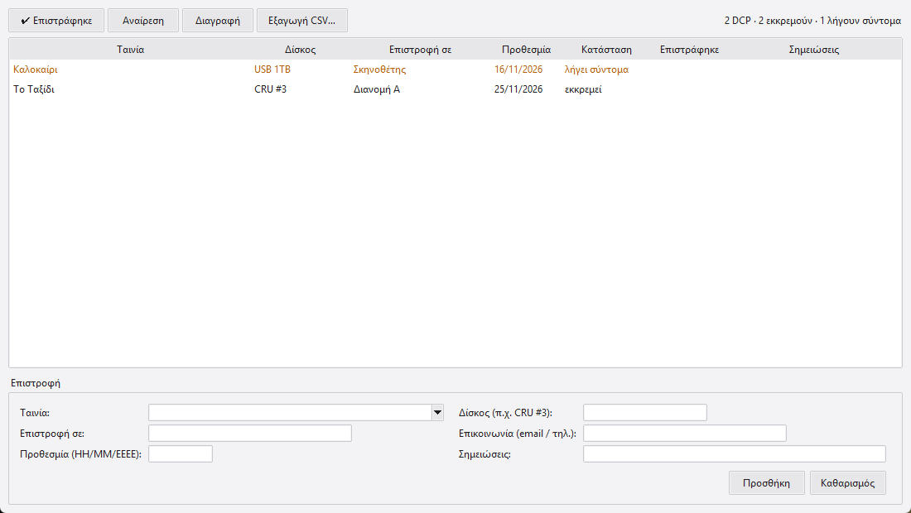
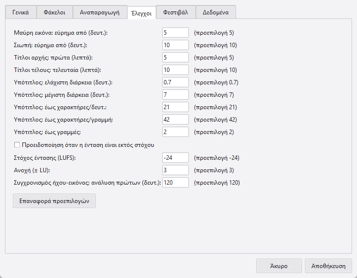

ReelCheck
Οδηγίες χρήσης
Έλεγχος, αναπαραγωγή και διαχείριση DCP για φεστιβάλ και αίθουσες
Έκδοση {{VERSION}} · {{DATE}}
Έλεγχος, αναπαραγωγή και διαχείριση DCP για φεστιβάλ και αίθουσες
Το ReelCheck είναι πρόγραμμα για Windows που ελέγχει DCP (Digital Cinema Package, τη μορφή με την οποία φτάνουν οι ταινίες στις αίθουσες) πριν από την προβολή. Δείχνει με μια ματιά αν μια ταινία είναι πλήρης, σωστή και έτοιμη να μπει στον server της αίθουσας, και βοηθά σε όλη τη δουλειά ενός φεστιβάλ: παραλαβή δίσκων, πρόγραμμα προβολών, αναφορές για την επιτροπή, επιστροφές.
ReelCheck.exe από τη σελίδα Releases του προγράμματος στο GitHub.Απαιτήσεις: Windows 10 ή 11, 64-bit. Για την αναπαραγωγή 4K βοηθά ένας σύγχρονος επεξεργαστής· σε αργά μηχανήματα υπάρχει η επιλογή «Μισή ανάλυση».
Το ReelCheck ελέγχει μία φορά την ημέρα αν υπάρχει νέα έκδοση. Αν υπάρχει, ρωτά:
Για έλεγχο τώρα: Εργαλεία → Έλεγχος για νέα έκδοση / αναβάθμιση. Ρυθμίσεις, σημειώσεις και σαρώσεις διατηρούνται.
ReelCheck.exe.
| Κουμπί | Τι κάνει |
|---|---|
| Άνοιγμα φακέλου DCP… | φορτώνει έναν φάκελο με ένα ή πολλά DCP |
| Παραλαβή DCP… | αντιγραφή από τον δίσκο του διανομέα με όλους τους ελέγχους (κεφάλαιο 7) |
| Άνοιγμα βίντεο… | αναπαραγωγή ενός απλού αρχείου βίντεο (MP4, MOV, MKV…) |
| Βίντεο → DCP… / Μετατροπή βίντεο… | μετατροπές (κεφάλαιο 9) |
| Έλεγχος hash επιλεγμένων / όλων | σύγκριση κάθε αρχείου με το PKL (κεφάλαιο 5) |
| Σάρωση ταινίας | έλεγχος εικόνας, ήχου και υποτίτλων σε όλη τη διάρκεια |
| Αναφορά HTML / Εξαγωγή CSV | αναφορά για εκτύπωση και πίνακας για Excel |
| Log | το αρχείο καταγραφής, χρήσιμο όταν κάτι δεν πάει καλά |
| Μισή ανάλυση / Πλήρης οθόνη | πώς θα ανοίξει η αναπαραγωγή |
| Κατάσταση | Σημασία | Τι κάνω |
|---|---|---|
| OK | Όλα τα αρχεία υπάρχουν και δεν βρέθηκε πρόβλημα. | Τίποτα. Η ταινία είναι έτοιμη. |
| ΠΡΟΣΟΧΗ | Κάτι θέλει έλεγχο: π.χ. το όνομα δεν ταιριάζει με το περιεχόμενο, μεγάλη σιωπή, δεν ταιριάζει με τις προδιαγραφές του φεστιβάλ, το KDM λήγει. | Διάβασε τα ευρήματα κάτω από τη λίστα· κλικ στον χρόνο ανοίγει την αναπαραγωγή σε εκείνο το σημείο. |
| ΣΦΑΛΜΑ | Σοβαρό πρόβλημα: λείπουν αρχεία, λάθος hash (χαλασμένο αρχείο), η εικόνα ή ο ήχος δεν ανοίγει. | Ζήτα νέο αντίγραφο από τον διανομέα ή ξανάκανε την αντιγραφή. |
| Εύρημα | Τι σημαίνει |
|---|---|
| Αρχεία: λείπουν N | Το CPL αναφέρει αρχεία που δεν είναι στον φάκελο. Αν είναι VF, ίσως λείπει το OV του. |
| Αρχεία: OK (+OV) | Version File που παίρνει εικόνα/ήχο από το OV του διπλανού φακέλου. Είναι σωστό. |
| Hash: ΛΑΘΟΣ HASH | Το αρχείο διαφέρει από αυτό που δήλωσε ο δημιουργός: χαλασμένο ή μισό. |
| όνομα: ήχος 5.1, αλλά έχει 2 κανάλια | Το όνομα DCNC δεν ταιριάζει με το περιεχόμενο. Η ταινία παίζει, αλλά ενημέρωσε τον διανομέα / τον μηχανικό προβολής. |
| μαύρη εικόνα 00:41:10–00:41:30 | Συνεχόμενη μαύρη εικόνα στη μέση της ταινίας. Έλεγξε αν είναι σκηνοθετική επιλογή. |
| σιωπή …, κανάλια χωρίς σήμα | Πιθανό πρόβλημα στη μίξη ή στο mastering. |
| clipping (ψαλίδισμα) | Ο ήχος ξεπερνά το μέγιστο σε κάποια σημεία· μπορεί να ακουστεί παραμόρφωση. |
| κρυπτογραφημένο: δεν βρέθηκε KDM | Χρειάζεται KDM για τον server της αίθουσας. Εργαλεία → Φόρτωση KDM. |
Κάθε DCP έχει ένα PKL (packing list) με το μέγεθος και το «αποτύπωμα» SHA-1 κάθε αρχείου. Ο έλεγχος hash ξαναδιαβάζει κάθε αρχείο και συγκρίνει. Έτσι πιάνονται αρχεία που χάλασαν στην αντιγραφή ή στο κατέβασμα. Διαρκεί όσο χρειάζεται για να διαβαστεί όλο το DCP (π.χ. 2–5 λεπτά για ταινία 150 GB από γρήγορο δίσκο). Το αποτέλεσμα θυμάται: αν το αρχείο δεν αλλάξει, ο επόμενος έλεγχος είναι άμεσος.
Ελέγχει όλη τη διάρκεια χωρίς προβολή: μαύρη εικόνα, σιωπή, κανάλια χωρίς σήμα, LFE, clipping, ένταση LUFS (integrated, LRA, true peak), αν ο ήχος κρατά όσο η εικόνα, και τους υπότιτλους (εκτός διάρκειας, πολύ σύντομοι, επικαλύψεις, ταχύτητα ανάγνωσης). Για ταινία 2 ωρών χρειάζεται περίπου 3 λεπτά. Τα πρώτα και τα τελευταία λεπτά θεωρούνται τίτλοι, ώστε το μαύρο εκεί να μη βγαίνει ως πρόβλημα.
Εργαλεία → Συγχρονισμός ήχου-εικόνας επιλεγμένων. Βρίσκει «φλας» στην εικόνα και σύντομα «μπιπ» στον ήχο (όπως σε sync test, 2-pop ή κλακέτα) στα πρώτα 2 λεπτά και μετρά πόσα ms διαφέρουν. Θετικός αριθμός σημαίνει ότι ο ήχος έρχεται αργότερα. Έως ±22 ms (μισό καρέ) δεν γίνεται αντιληπτό, έως ±45 ms βγαίνει ΠΡΟΣΟΧΗ, πάνω από αυτό ΣΦΑΛΜΑ. Αν η ταινία δεν έχει τέτοιο σήμα στην αρχή, το πρόγραμμα το λέει.
Το όνομα ενός DCP ακολουθεί τη σύμβαση DCNC, π.χ. Taxidi_FTR-1_F_EL-EN_51_2K_20261115_SMPTE_OV:
τίτλος, είδος (FTR μεγάλου μήκους, SHR μικρού, TLR τρέιλερ), κάδρο (F flat, S scope), γλώσσα ήχου-υποτίτλων, ήχος
(51 = 5.1), ανάλυση, ημερομηνία, πρότυπο, OV/VF. Το ReelCheck το διαβάζει και το συγκρίνει με το περιεχόμενο. Με τις
προδιαγραφές φεστιβάλ δίνει ΠΡΟΣΟΧΗ σε ό,τι δεν δέχεστε (π.χ. μόνο 2K, μόνο SMPTE, υποχρεωτικά αγγλικοί υπότιτλοι).
Για κρυπτογραφημένα DCP: τα αρχεία KDM (.xml) βρίσκονται αυτόματα στον φάκελο ή φορτώνονται με Εργαλεία → Φόρτωση KDM. Το ReelCheck δείχνει για ποιον server είναι, από πότε έως πότε ισχύει, και προειδοποιεί όταν έχει λήξει ή δεν ισχύει ακόμα.
Διπλό κλικ σε ταινία ή Αναπαραγωγή. Ανοίγει παράθυρο με την ταινία, μπάρα χρόνου, υπότιτλους και μετρητές ήχου ανά κανάλι. Κλικ σε χρόνο στα ευρήματα ή στις σημειώσεις ανοίγει την αναπαραγωγή λίγο πριν από εκείνο το σημείο.

| Πλήκτρο | Λειτουργία | Πλήκτρο | Λειτουργία |
|---|---|---|---|
| Space | παύση / συνέχεια | F | πλήρης οθόνη |
| ← → | −10 / +10 δευτ. (με Shift ±60) | H | μισή / πλήρης ανάλυση |
| , . | καρέ-καρέ | S | υπότιτλοι on/off |
| PgUp PgDn | προηγούμενο / επόμενο reel | L | άλλη γλώσσα υποτίτλων |
| Home | αρχή | U | άλλος ήχος (άλλο CPL ίδιας διάρκειας) |
| 0 | όλα τα κανάλια | 1–9 | solo καναλιού (L, R, C, LFE, Ls, Rs…) |
| M | σίγαση | A | μετρητές: αυτόματα / πάντα / κρυφοί |
| N | νέα σημείωση στον τρέχοντα χρόνο | J / Shift+J | επόμενη / προηγούμενη σημείωση |
| [ ] | επανάληψη A–B (\ ακύρωση) | Z | zoom 2× στο σημείο του ποντικιού |
| P | screenshot (Εικόνες\ReelCheck) | E | 3D: αριστερό / δεξί μάτι |
| Ctrl+Z | σβήσιμο τελευταίας σημείωσης | Esc / Q | έξοδος |
Επίλεξε με Ctrl+κλικ π.χ. τρέιλερ, ident και ταινία, και Εργαλεία → Λίστα προβολής με τα επιλεγμένα: παίζουν το ένα μετά το άλλο (πρώτα τα τρέιλερ και τα σποτ, μετά η ταινία).
Κουμπί Παραλαβή DCP…: συνδέεις τον δίσκο που ήρθε και με μία κίνηση γίνονται όλα:

Πολλά DCP έρχονται σε δίσκους φτιαγμένους για servers αιθουσών, που τα Windows δεν διαβάζουν.
Ο δίσκος ανοίγει μόνο για ανάγνωση: το ReelCheck δεν γράφει ποτέ σε αυτόν.
Εργαλεία → Αντιγραφή επιλεγμένων σε δίσκο με επαλήθευση…: για να ετοιμάσεις δίσκο για την αίθουσα ή για αντίγραφο ασφαλείας.
ReelCheck_αντιγραφή_….txt με το αποτέλεσμα κάθε αρχείου.Κουμπί Βίντεο → DCP…. Δέχεται MP4, MOV, MKV και άλλα. Χρησιμοποιεί το δωρεάν πρόγραμμα DCP-o-matic· αν δεν είναι εγκατεστημένο, το ReelCheck σε βοηθά να το κατεβάσεις και το εγκαθιστά.

Υπότιτλοι .srt με το ίδιο όνομα (π.χ. ταινία.srt ή ταινία.el.srt) μπαίνουν
αυτόματα. Οι ελληνικοί τίτλοι γράφονται με λατινικούς χαρακτήρες στο όνομα του DCP. Χρειάζεται περίπου όσο χρόνο
κρατά το βίντεο ή και περισσότερο, και ελεύθερο χώρο περίπου 2× το τελικό DCP.
Κουμπί Μετατροπή βίντεο…: σε MP4 H.264 (παίζει παντού), MP4 H.265 (μικρότερο) ή MOV ProRes (για μοντάζ). Επιλογές ποιότητας, ανάλυσης, ήχου (στέρεο ή όπως είναι) και υποτίτλων (αντιγραφή ή «καμένοι» στην εικόνα). Αν το βίντεο είναι ήδη H.264/H.265, αλλάζει μόνο το κοντέινερ: γίνεται σε δευτερόλεπτα και χωρίς απώλεια. Χρησιμοποιείται η κάρτα γραφικών όταν υπάρχει.
Επίλεξε DCP στη λίστα και Εργαλεία → Εξαγωγή επιλεγμένων DCP σε MP4: π.χ. για την επιτροπή ή για το site, με τους υπότιτλους του DCP στην εικόνα. Δεν γίνεται σε κρυπτογραφημένα DCP.
Φεστιβάλ → Ident / intro φεστιβάλ → DCP…: δίνεις λογότυπο (PNG με διαφάνεια ή JPG), προαιρετικά μουσική και κείμενο, διάρκεια και κάδρο, και βγαίνει έτοιμο DCP (είδος XSN) που μπαίνει πριν από κάθε ταινία. Το λογότυπο εμφανίζεται με fade in/out σε μαύρο φόντο· η μουσική κόβεται στη διάρκεια με σβήσιμο στο τέλος.

Όλα βρίσκονται στο μενού Φεστιβάλ.
Προσθέτεις προβολές (ημερομηνία, ώρα, αίθουσα, ταινία από τη λίστα, επιπλέον χρόνο για εισαγωγή ή Q&A). Η λήξη υπολογίζεται μόνη της και οι συγκρούσεις ώρας στην ίδια αίθουσα φαίνονται με κόκκινο. Για κάθε προβολή φαίνεται η κατάσταση του DCP.

Για τις επιλεγμένες ταινίες (ή όλες): εξώφυλλο με πίνακα και μία σελίδα ανά ταινία με τρία καρέ, στοιχεία, ευρήματα, σημειώσεις και χώρο για τα σχόλια της επιτροπής. Χρειάζεται τον Microsoft Edge (υπάρχει σε κάθε Windows).
Όταν ο διανομέας στείλει νέα έκδοση: επίλεξε την παλιά και τη νέα με Ctrl+κλικ και Εργαλεία → Σύγκριση δύο επιλεγμένων DCP. Ο πίνακας δείχνει τι ίδιο (✔) και τι διαφορετικό (≠, με κόκκινο): διάρκεια, reels, εικόνα, ήχος, υπότιτλοι. Τα αρχεία συγκρίνονται με το αποτύπωμα του PKL, χωρίς να ξαναδιαβαστούν, οπότε η σύγκριση είναι άμεση.

Στις Ρυθμίσεις → Φάκελοι ορίζεις έναν φάκελο (π.χ. εκεί που κατεβαίνουν τα DCP). Όταν έρθει νέο DCP και ολοκληρωθεί το κατέβασμα ή η αντιγραφή, μπαίνει μόνο του στη λίστα, ελέγχεται (hash + σάρωση) και εμφανίζεται ειδοποίηση των Windows με το αποτέλεσμα.
Φεστιβάλ → Κατάλογος φεστιβάλ (CSV)…: δίνεις τη λίστα με τους τίτλους που περιμένετε (CSV με στήλη «Τίτλος» ή απλό κείμενο με έναν τίτλο ανά γραμμή) και βλέπεις ποιες ταινίες ήρθαν, ποιες λείπουν και ποιες έχουν πρόβλημα. Οι ελληνικοί τίτλοι συγκρίνονται και με λατινικούς (Το Ταξίδι = Taxidi).
Ποιοι δίσκοι και ποια DCP πρέπει να επιστραφούν, σε ποιον και μέχρι πότε. Τα εκπρόθεσμα φαίνονται με κόκκινο και όσα λήγουν μέσα σε 3 μέρες με πορτοκαλί. Φεστιβάλ → Προσθήκη επιλεγμένων στις επιστροφές προσθέτει κατευθείαν τις ταινίες που έχεις επιλέξει στη λίστα. Κουμπί «✔ Επιστράφηκε» όταν φύγει ο δίσκος.

Σύνοψη της λίστας: πόσες ταινίες, συνολική διάρκεια, χώρος στον δίσκο, είδος, 2K/4K, ήχος, πρότυπο, υπότιτλοι, κρυπτογραφημένα, πόσες ελέγχθηκαν και σε τι κατάσταση είναι. Εξάγεται σε CSV.
Όταν τελειώνει μια μεγάλη εργασία (αντιγραφή, σάρωση, μετατροπή), εμφανίζεται ειδοποίηση των Windows κάτω δεξιά, ώστε να μη χρειάζεται να κοιτάς την οθόνη. Ρυθμίζεται στις Ρυθμίσεις → Γενικά.
Μενού Ρυθμίσεις → Ρυθμίσεις…. Οι αλλαγές ισχύουν αμέσως, εκτός από τη γλώσσα, που θέλει επανεκκίνηση.

| Καρτέλα | Τι περιέχει |
|---|---|
| Γενικά | γλώσσα (Ελληνικά / English), θέμα (φωτεινό / σκούρο / αυτόματο), έλεγχος νέας έκδοσης, άνοιγμα στον τελευταίο φάκελο, ειδοποιήσεις των Windows |
| Φάκελοι | φάκελος του φεστιβάλ, έξοδοι μετατροπών, screenshots, παρακολούθηση φακέλου για νέα DCP |
| Αναπαραγωγή | πλήρης οθόνη / μισή ανάλυση, συσκευή ήχου (π.χ. τα ηχεία της αίθουσας), αρχική ένταση, υπότιτλοι, μετρητές |
| Έλεγχοι | όρια για μαύρο και σιωπή, τίτλοι αρχής / τέλους, όρια υποτίτλων, στόχος έντασης LUFS, διάρκεια ανάλυσης συγχρονισμού |
| Φεστιβάλ | οι προδιαγραφές που δέχεστε (ανάλυση, fps, πρότυπο, ήχος, γλώσσα υποτίτλων, διάρκεια, κρυπτογράφηση, 3D) |
| Δεδομένα | φάκελος δεδομένων, καθαρισμός cache, εξαγωγή / εισαγωγή ρυθμίσεων για μεταφορά σε άλλον υπολογιστή |
| Τι | Πού |
|---|---|
| Ρυθμίσεις | %APPDATA%\ReelCheck\settings.json |
| Σημειώσεις | %APPDATA%\ReelCheck\notes\ |
| Σαρώσεις, cache των hash | %APPDATA%\ReelCheck\scans\, hash_cache.json |
| Πρόγραμμα προβολών, επιστροφές | %APPDATA%\ReelCheck\schedule.json, returns.json |
| Log | %APPDATA%\ReelCheck\reelcheck.log (κουμπί Log) |
| Screenshots | Εικόνες\ReelCheck |
| Αναφορά αντιγραφής | στον φάκελο προορισμού |
Στους φακέλους των DCP δεν γράφεται τίποτα. Το πρόγραμμα συνδέεται στο Internet μόνο για να ελέγξει αν υπάρχει νέα έκδοση (GitHub) και δεν στέλνει τίποτα για τον χρήστη ή τις ταινίες. Για μεταφορά σε άλλον υπολογιστή: Ρυθμίσεις → Δεδομένα → Εξαγωγή ρυθμίσεων.
Τα DCP 4K είναι βαριά. Επίλεξε «Μισή ανάλυση» (ή πλήκτρο H στην αναπαραγωγή). Για έλεγχο συγχρονισμού προτίμησε τον αυτόματο έλεγχο (κεφάλαιο 5).
Έλεγξε τη συσκευή ήχου στις Ρυθμίσεις → Αναπαραγωγή. Αν η επιλεγμένη συσκευή δεν είναι συνδεδεμένη, ο ήχος παίζει από την προεπιλεγμένη των Windows. Πλήκτρο M = σίγαση, 0 = όλα τα κανάλια.
Τα κρυπτογραφημένα DCP παίζουν μόνο σε server αίθουσας με KDM. Στο ReelCheck μπορείς να ελέγξεις το hash, το KDM και τα στοιχεία, όχι να δεις την εικόνα.
Ένα Version File (π.χ. μόνο με υπότιτλους) χρειάζεται το OV του. Βάλε τους δύο φακέλους δίπλα-δίπλα στον ίδιο γονικό φάκελο και ξαναφόρτωσε.
Μάλλον είναι δίσκος Linux (ext). Εργαλεία → Δίσκος Linux (κεφάλαιο 7). Μην τον διαμορφώσεις.
Χρειάζεται το DCP-o-matic· το παράθυρο «Βίντεο → DCP» δείχνει αν βρέθηκε και βοηθά στην εγκατάσταση. Έλεγξε και τον ελεύθερο χώρο στον φάκελο εξόδου.
Χρειάζεται Microsoft Edge ή Chrome. Εναλλακτικά: Αναφορά HTML και από τον browser Εκτύπωση → Αποθήκευση ως PDF.
Πάτα Log στο κεντρικό παράθυρο: εκεί καταγράφεται με λεπτομέρειες κάθε σφάλμα. Στείλε το μαζί με μια περιγραφή σε όποιον υποστηρίζει το πρόγραμμα.